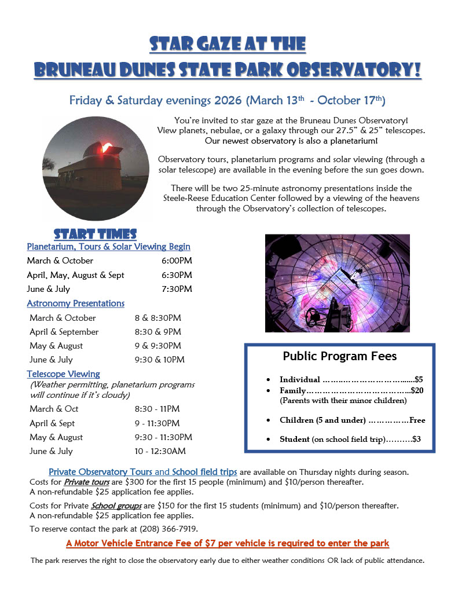

Racine is available for public outreach talks, classroom visits, and community science events. Please reach out with any questions about public speaking opportunities or to discuss scheduling a visit. Email me at: racinecleveland@boisestate.edu
Upcoming Events

If you are interested in attending an event or would like to know when I will be at the observatory, please feel free to reach out.
2026
Namibian Sand Dunes Provide Insight Into Largest Moon of Saturn
 Read This Article
Read This Article
The Dragonfly rotorcraft is scheduled to launch in 2028 and is expected to reach Titan, the largest moon of Saturn, in 2034. The rotorcraft will then spend 3.5 years exploring sand dunes and craters on Titan's surface, taking samples of surface materials and photographic imagery for analysis.
Titan is of particular interest to scientists due to its dense, nitrogen-rich atmosphere (like Earth) and the stable bodies of liquid (methane, ethane and dissolved nitrogen) on its frozen surface, perhaps providing insights into Earth's own origin and atmospheric chemistry. Racine Cleveland, who received her doctorate in space and planetary sciences from the U of A in the spring of 2026, hopes to be a part of the team analyzing those samples when the call for scientists comes.
Cleveland is in good position to do that, as she was part of a NASA-funded expedition to Namibia in October 2025 to explore the dunes of the Namib Sand Sea, which are considered the closest earth analogue to what Dragonfly will encounter on Titan. The immense dunes are roughly the same size and shape as Titan's, and they interact with the underlying landforms in a similar way. Cleveland spent nine days in Namibia with 40 U.S. planetary aeolian (or wind) scientists and engineers getting a sense of the conditions on Titan.
Boise State First Friday Astronomy Lecture Series
Wacth This PresentationRacine Clevelandis a planetary science postdoctoral research fellow here at Boise State University working with Brian Jackson in the Physics and Astronomy Department. She recently earned her PhD in Space and Planetary Science from the University of Arkansas. Originally from Prague, Oklahoma, her work combines remote sensing, planetary geomorphology, and atmospheric science. Her research has included studying active surface change on Mars using high-resolution orbital imagery, comparing Titan’s hydrocarbon dunes to Earth’s silicate deserts through radar remote sensing, and investigating dust devil physics on both Earth and Mars. Beyond research, she is active in science outreach through the IDAstro program at Bruneau Dunes State Park, helping connect communities with astronomy and planetary science and serving as a camp leader for the Astro Adventure Camp put on by Central Idaho Dark Sky Reserve STEM Network.
Artemis splashes down! What happens next?
Listen To This SegmentDr. Racine Cleveland is our own Artemis enthusiast. She's a planetary science postdoctoral research fellow at Boise State University and she’s been studying Martian dust devils with Dr. Brian Jackson in Boise State's Physics Department.
She told Idaho Matters all about the mission when Orion blasted off and she’s back now that the astronauts are on the ground to tell us how the mission went. - Writting by Samantha Wright. Interviewed by Gemma Gaudette.
NASA’s Artemis II prepares for new era of human spaceflight
Listen To This SegmentDr. Racine Cleveland was watching last night when Orion blasted off. She's a planetary science postdoctoral research fellow at Boise State University and she’s been studying Martian dust devils with Dr. Brian Jackson in Boise State's Physics Department.
She's a big Artemis enthusiast and she joined Idaho Matters to tell us about the mission! - Writting by Samantha Wright. Interviewed by Gemma Gaudette.
Cleveland earns Ph.D.
 Read This Article
Read This Article
Racine Cleveland, a member of the Choctaw Nation of Oklahoma and a native of Prague, Oklahoma, has earned a doctoral degree from the University of Arkansas, becoming the first in her family to receive a Ph.D.
“I am proud to represent my Choctaw heritage, my hometown and my family,” Cleveland said. - Choctawn Nation of Oklahoma Biskinik April & May Edition 2026
2025
2024
Solar eclipse excites members of University of Arkansas program.
 Watch This Interview
Watch This Interview
The April 8 solar eclipse will bring totality to parts of the Natural State, and members of a University of Arkansas program can't wait for it to happen.
"I think that, just in general, it's really exciting for people that are not scientists to get a glance into astronomy," said PhD candidate Racine Cleveland.
2022
Another Prague Graduate Give Back


Prague 2014 graduate Racine Cleveland visiting with the Prague Elementary 3rd grade classes last week. She talked to the students about planets in our solar system and how their orbits work. Racine is currently a Space and Planetary Science PhD student at the University of Arkansas. She does research funded by a grant that her science team were awards by NASA. (Submitted by Mrs. Nichole Bailey) - Prague (Oklahoma) Times New Herald February 2022